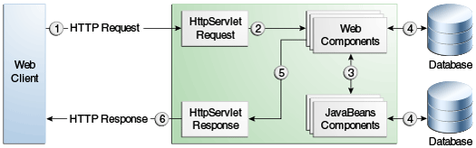

1. Getting Started with Web Applications
This chapter introduces web applications, which typically use JavaServer Faces technology and/or Java Servlet technology.
1.1. Web Applications
A web application is a dynamic extension of a web or application server. Web applications are of the following types:
-
Presentation-oriented: A presentation-oriented web application generates interactive web pages containing various types of markup language (HTML, XHTML, XML, and so on) and dynamic content in response to requests. Development of presentation-oriented web applications is covered in Chapter 7, "Jakarta Server Faces Technology," through Chapter 18, "Jakarta Servlet Technology."
-
Service-oriented: A service-oriented web application implements the endpoint of a web service. Presentation-oriented applications are often clients of service-oriented web applications. Development of service-oriented web applications is covered in Chapter 31, "Building Web Services with JAX-WS," and Chapter 32, "Building RESTful Web Services with Jakarta RESTful Web Services," in Part III, "Web Services."
In the Jakarta EE platform, web components provide the dynamic extension
capabilities for a web server. Web components can be Jakarta servlets, web
pages implemented with Jakarta Server Faces technology, web service
endpoints, or Jakarta Server pages. Figure 6-1 illustrates the
interaction between a web client and a web application that uses a
servlet. The client sends an HTTP request to the web server. A web
server that implements Jakarta Servlet and Jakarta Server Pages technology
converts the request into an HTTPServletRequest object. This object is
delivered to a web component, which can interact with JavaBeans
components or a database to generate dynamic content. The web component
can then generate an HTTPServletResponse or can pass the request to
another web component. A web component eventually generates a
HTTPServletResponse object. The web server converts this object to an
HTTP response and returns it to the client.

Servlets are Java programming language classes that dynamically process requests and construct responses. Java technologies, such as Jakarta Server Faces and Facelets, are used for building interactive web applications. (Frameworks can also be used for this purpose.) Although servlets and Jakarta Server Faces and Facelets pages can be used to accomplish similar things, each has its own strengths. Servlets are best suited for service-oriented applications (web service endpoints can be implemented as servlets) and the control functions of a presentation-oriented application, such as dispatching requests and handling nontextual data. Jakarta Server Faces and Facelets pages are more appropriate for generating text-based markup, such as XHTML, and are generally used for presentation-oriented applications.
Web components are supported by the services of a runtime platform called a web container. A web container provides such services as request dispatching, security, concurrency, and lifecycle management. A web container also gives web components access to such APIs as naming, transactions, and email.
Certain aspects of web application behavior can be configured when the application is installed, or deployed, to the web container. The configuration information can be specified using Jakarta EE annotations or can be maintained in a text file in XML format called a web application deployment descriptor (DD). A web application DD must conform to the schema described in the Jakarta Servlet specification.
This chapter gives a brief overview of the activities involved in developing web applications. First, it summarizes the web application lifecycle and explains how to package and deploy very simple web applications on GlassFish Server. The chapter then moves on to configuring web applications and discusses how to specify the most commonly used configuration parameters.
1.2. Web Application Lifecycle
A web application consists of web components; static resource files, such as images and cascading style sheets (CSS); and helper classes and libraries. The web container provides many supporting services that enhance the capabilities of web components and make them easier to develop. However, because a web application must take these services into account, the process for creating and running a web application is different from that of traditional stand-alone Java classes.
The process for creating, deploying, and executing a web application can be summarized as follows:
-
Develop the web component code.
-
Develop the web application deployment descriptor, if necessary.
-
Compile the web application components and helper classes referenced by the components.
-
Optionally, package the application into a deployable unit.
-
Deploy the application into a web container.
-
Access a URL that references the web application.
Developing web component code is covered in the later chapters. Steps 2 through 4 are expanded on in the following sections and illustrated with a Hello, World–style, presentation-oriented application. This application allows a user to enter a name into an HTML form and then displays a greeting after the name is submitted.
The Hello application contains two web components that generate the greeting and the response. This chapter discusses the following simple applications:
-
hello1, a Jakarta Server Faces technology–based application that uses two XHTML pages and a managed bean -
hello2, a servlet-based web application in which the components are implemented by two servlet classes
The applications are used to illustrate tasks involved in packaging, deploying, configuring, and running an application that contains web components.
1.3. A Web Module That Uses Jakarta Server Faces Technology: The hello1 Example
The hello1 application is a web module that uses Jakarta Server Faces
technology to display a greeting and response. You can use a text editor
to view the application files, or you can use NetBeans IDE.
The source code for this application is in the
tut-install/examples/web/jsf/hello1/ directory.
1.3.1. To View the hello1 Web Module Using NetBeans IDE
To view the hello1 web module using NetBeans IDE:
-
From the File menu, choose Open Project.
-
In the Open Project dialog box, navigate to:
tut-install/examples/web/jsf -
Select the
hello1folder and click Open Project. -
Expand the Web Pages node and double-click the
index.xhtmlfile to view it in the editor.The
index.xhtmlfile is the default landing page for a Facelets application. In a typical Facelets application, web pages are created in XHTML. For this application, the page uses simple tag markup to display a form with a graphic image, a header, a field, and two command buttons:<!DOCTYPE html PUBLIC "-//W3C//DTD XHTML 1.0 Transitional//EN" "http://www.w3.org/TR/xhtml1/DTD/xhtml1-transitional.dtd"> <html lang="en" xmlns="http://www.w3.org/1999/xhtml" xmlns:h="http://xmlns.jcp.org/jsf/html"> <h:head> <title>Facelets Hello Greeting</title> </h:head> <h:body> <h:form> <h:graphicImage url="#{resource['images:duke.waving.gif']}" alt="Duke waving his hand"/> <h2>Hello, my name is Duke. What's yours?</h2> <h:inputText id="username" title="My name is: " value="#{hello.name}" required="true" requiredMessage="Error: A name is required." maxlength="25" /> <p></p> <h:commandButton id="submit" value="Submit" action="response"> </h:commandButton> <h:commandButton id="reset" value="Reset" type="reset"> </h:commandButton> </h:form> ... </h:body> </html>The most complex element on the page is the
inputTextfield. Themaxlengthattribute specifies the maximum length of the field. Therequiredattribute specifies that the field must be filled out; therequiredMessageattribute provides the error message to be displayed if the field is left empty. Thetitleattribute provides the text to be used by screen readers for the visually disabled. Finally, thevalueattribute contains an expression that will be provided by theHellomanaged bean.The web page connects to the
Hellomanaged bean through the Expression Language (EL) value expression#{hello.name}, which retrieves the value of thenameproperty from the managed bean. Note the use ofhelloto reference the managed beanHello. If no name is specified in the@Namedannotation of the managed bean, the managed bean is always accessed with the first letter of the class name in lowercase.The Submit
commandButtonelement specifies the action asresponse, meaning that when the button is clicked, theresponse.xhtmlpage is displayed. -
Double-click the
response.xhtmlfile to view it.The response page appears. Even simpler than the greeting page, the response page contains a graphic image, a header that displays the expression provided by the managed bean, and a single button whose
actionelement transfers you back to theindex.xhtmlpage:<!DOCTYPE html PUBLIC "-//W3C//DTD XHTML 1.0 Transitional//EN" "http://www.w3.org/TR/xhtml1/DTD/xhtml1-transitional.dtd"> <html lang="en" xmlns="http://www.w3.org/1999/xhtml" xmlns:h="http://xmlns.jcp.org/jsf/html"> <h:head> <title>Facelets Hello Response</title> </h:head> <h:body> <h:form> <h:graphicImage url="#{resource['images:duke.waving.gif']}" alt="Duke waving his hand"/> <h2>Hello, #{hello.name}!</h2> <p></p> <h:commandButton id="back" value="Back" action="index" /> </h:form> </h:body> </html> -
Expand the Source Packages node, then the
ee.jakarta.tutorial.hello1node. -
Double-click the
Hello.javafile to view it.The
Helloclass, called a managed bean class, provides getter and setter methods for thenameproperty used in the Facelets page expressions. By default, the expression language refers to the class name, with the first letter in lowercase (hello.name).package ee.jakarta.tutorial.hello1; import jakarta.enterprise.context.RequestScoped; import jakarta.inject.Named; @Named @RequestScoped public class Hello { private String name; public Hello() { } public String getName() { return name; } public void setName(String user_name) { this.name = user_name; } }If you use the default name for the bean class, you can specify
@Modelas the annotation instead of having to specify both@Namedand@RequestScoped. The@Modelannotation is called a stereotype, a term for an annotation that encapsulates other annotations. It is described later in Using Stereotypes in CDI Applications. Some examples will use@Modelwhere it is appropriate. -
Under the Web Pages node, expand the WEB-INF node and double-click the
web.xmlfile to view it.The
web.xmlfile contains several elements that are required for a Facelets application. All of the following are created automatically when you use NetBeans IDE to create an application.-
A context parameter specifying the project stage:
<context-param> <param-name>javax.faces.PROJECT_STAGE</param-name> <param-value>Development</param-value> </context-param>A context parameter provides configuration information needed by a web application. An application can define its own context parameters. In addition, Jakarta Server Faces technology and Jakarta Servlet technology define context parameters that an application can use.
-
A
servletelement and itsservlet-mappingelement specifying theFacesServlet. All files with the.xhtmlsuffix will be matched:<servlet> <servlet-name>Faces Servlet</servlet-name> <servlet-class>javax.faces.webapp.FacesServlet</servlet-class> <load-on-startup>1</load-on-startup> </servlet> <servlet-mapping> <servlet-name>Faces Servlet</servlet-name> <url-pattern>*.xhtml</url-pattern> </servlet-mapping> -
A
welcome-file-listelement specifying the location of the landing page:<welcome-file-list> <welcome-file>index.xhtml</welcome-file> </welcome-file-list>
-
Introduction to Scopes
In the Hello.java class, the annotations javax.inject.Named and
javax.enterprise.context.RequestScoped identify the class as a managed
bean using request scope. Scope defines how application data persists
and is shared.
The most commonly used scopes in Jakarta Server Faces applications are the following:
-
Request (
@RequestScoped): Request scope persists during a single HTTP request in a web application. In an application likehello1, in which the application consists of a single request and response, the bean uses request scope. -
Session (
@SessionScoped): Session scope persists across multiple HTTP requests in a web application. When an application consists of multiple requests and responses where data needs to be maintained, beans use session scope. -
Application (
@ApplicationScoped): Application scope persists across all users' interactions with a web application.
For more information on scopes in Jakarta Server Faces technology, see Using Managed Bean Scopes.
1.3.2. Packaging and Deploying the hello1 Web Module
A web module must be packaged into a WAR in certain deployment scenarios
and whenever you want to distribute the web module. You can package a
web module into a WAR file by using Maven or by using the IDE tool of
your choice. This tutorial shows you how to use NetBeans IDE or Maven to
build, package, and deploy the hello1 sample application.
You can deploy a WAR file to GlassFish Server by:
-
Using NetBeans IDE
-
Using the
asadmincommand -
Using the Administration Console
-
Copying the WAR file into the
domain-dir/autodeploy/directory
Throughout the tutorial, you will use NetBeans IDE or Maven for packaging and deploying.
To Build and Package the hello1 Web Module Using NetBeans IDE
To build and package the hello1 web module using NetBeans IDE:
-
Start GlassFish Server as described in To Start GlassFish Server Using NetBeans IDE, if you have not already done so.
-
From the File menu, choose Open Project.
-
In the Open Project dialog box, navigate to:
tut-install/examples/web/jsf -
Select the
hello1folder. -
Click Open Project.
-
In the Projects tab, right-click the
hello1project and select Build. This command deploys the project to the server.
To Build and Package the hello1 Web Module Using Maven
To build and package the hello1 web module using Maven:
-
Start GlassFish Server as described in To Start GlassFish Server Using the Command Line, if you have not already done so.
-
In a terminal window, go to:
tut-install/examples/web/jsf/hello1/ -
Enter the following command:
mvn installThis command spawns any necessary compilations and creates the WAR file in
tut-install/examples/web/jsf/hello1/target/. It then deploys the project to the server.
1.3.3. Viewing Deployed Web Modules
GlassFish Server provides two ways to view the deployed web modules: the
Administration Console and the asadmin command. You can also use
NetBeans IDE to view deployed modules.
To View Deployed Web Modules Using the Administration Console
To view deployed web modules using the Administration Console:
-
Open the URL
http://localhost:4848/in a browser. -
Select the Applications node.
The deployed web modules appear in the Deployed Applications table.
To View Deployed Web Modules Using the asadmin Command
Enter the following command:
asadmin list-applications1.3.4. Running the Deployed hello1 Web Module
Now that the web module is deployed, you can view it by opening the
application in a web browser. By default, the application is deployed to
host localhost on port 8080. The context root of the web application
is hello1.
To run the deployed hello1 web module:
-
Open a web browser.
-
Enter the following URL:
http://localhost:8080/hello1/ -
In the field, enter your name and click Submit.
The response page displays the name you submitted. Click Back to try again.
Dynamic Reloading of Deployed Modules
If dynamic reloading is enabled, you do not have to redeploy an
application or module when you change its code or deployment
descriptors. All you have to do is copy the changed pages or class files
into the deployment directory for the application or module. The
deployment directory for a web module named context-root is
domain-dir/applications/context-root. The server checks for changes
periodically and redeploys the application, automatically and
dynamically, with the changes.
This capability is useful in a development environment because it allows code changes to be tested quickly. Dynamic reloading is not recommended for a production environment, however, because it may degrade performance. In addition, whenever a reload takes place, the sessions at that time become invalid, and the client must restart the session.
In GlassFish Server, dynamic reloading is enabled by default.
1.3.5. Undeploying the hello1 Web Module
You can undeploy web modules and other types of enterprise applications by using either NetBeans IDE or Maven.
To Undeploy the hello1 Web Module Using NetBeans IDE
To undeploy the hello1 web module using NetBeans IDE:
-
In the Services tab, expand the Servers node, then expand the GlassFish Server node.
-
Expand the Applications node.
-
Right-click the
hello1module and select Undeploy. -
To delete the class files and other build artifacts, go back to the Projects tab, right-click the project, and select Clean.
1.4. A Web Module That Uses Jakarta Servlet Technology: The hello2 Example
The hello2 application is a web module that uses Jakarta Servlet
technology to display a greeting and response. You can use a text editor
to view the application files, or you can use NetBeans IDE.
The source code for this application is in the
tut-install/examples/web/servlet/hello2/ directory.
1.4.1. Mapping URLs to Web Components
When it receives a request, the web container must determine which web component should handle the request. The web container does so by mapping the URL path contained in the request to a web application and a web component. A URL path contains the context root and, optionally, a URL pattern:
http://host:port/context-root[/url-pattern]You set the URL pattern for a servlet by using the @WebServlet
annotation in the servlet source file. For example, the
GreetingServlet.java file in the hello2 application contains the
following annotation, specifying the URL pattern as /greeting:
@WebServlet("/greeting")
public class GreetingServlet extends HttpServlet {
...This annotation indicates that the URL pattern /greeting follows the
context root. Therefore, when the servlet is deployed locally, it is
accessed with the following URL:
http://localhost:8080/hello2/greetingTo access the servlet by using only the context root, specify "/" as
the URL pattern.
1.4.2. Examining the hello2 Web Module
The hello2 application behaves almost identically to the hello1
application, but it is implemented using Jakarta Servlet technology instead
of Jakarta Server Faces technology. You can use a text editor to view the
application files, or you can use NetBeans IDE.
To View the hello2 Web Module Using NetBeans IDE
To view the hello2 web module using NetBeans IDE:
-
From the File menu, choose Open Project.
-
In the Open Project dialog box, navigate to:
tut-install/examples/web/servlet -
Select the
hello2folder and click Open Project. -
Expand the Source Packages node, then expand the
ee.jakarta.tutorial.hello2node. -
Double-click the
GreetingServlet.javafile to view it.This servlet overrides the
doGetmethod, implementing theGETmethod of HTTP. The servlet displays a simple HTML greeting form whose Submit button, like that ofhello1, specifies a response page for its action. The following excerpt begins with the@WebServletannotation, which specifies the URL pattern relative to the context root:@WebServlet("/greeting") public class GreetingServlet extends HttpServlet { @Override public void doGet(HttpServletRequest request, HttpServletResponse response) throws ServletException, IOException { response.setContentType("text/html"); response.setBufferSize(8192); try (PrintWriter out = response.getWriter()) { out.println("<html lang=\"en\">" + "<head><title>Servlet Hello</title></head>"); // then write the data of the response out.println("<body bgcolor=\"#ffffff\">" + "<img src=\"duke.waving.gif\" " + "alt=\"Duke waving his hand\">" + "<form method=\"get\">" + "<h2>Hello, my name is Duke. What's yours?</h2>" + "<input title=\"My name is: \"type=\"text\" " + "name=\"username\" size=\"25\">" + "<p></p>" + "<input type=\"submit\" value=\"Submit\">" + "<input type=\"reset\" value=\"Reset\">" + "</form>"); String username = request.getParameter("username"); if (username != null && username.length()> 0) { RequestDispatcher dispatcher = getServletContext().getRequestDispatcher("/response"); if (dispatcher != null) { dispatcher.include(request, response); } } out.println("</body></html>"); } } ... -
Double-click the
ResponseServlet.javafile to view it.This servlet also overrides the
doGetmethod, displaying only the response. The following excerpt begins with the@WebServletannotation, which specifies the URL pattern relative to the context root:@WebServlet("/response") public class ResponseServlet extends HttpServlet { @Override public void doGet(HttpServletRequest request, HttpServletResponse response) throws ServletException, IOException { try (PrintWriter out = response.getWriter()) { // then write the data of the response String username = request.getParameter("username"); if (username != null && username.length()> 0) { out.println("<h2>Hello, " + username + "!</h2>"); } } } ...
1.4.3. Running the hello2 Example
You can use either NetBeans IDE or Maven to build, package, deploy, and
run the hello2 example.
To Run the hello2 Example Using NetBeans IDE
To run the hello2 example using NetBeans IDE:
-
Start GlassFish Server as described in To Start GlassFish Server Using NetBeans IDE, if you have not already done so.
-
From the File menu, choose Open Project.
-
In the Open Project dialog box, navigate to:
tut-install/examples/web/servlet -
Select the
hello2folder. -
Click Open Project.
-
In the Projects tab, right-click the
hello2project and select Build to package and deploy the project. -
In a web browser, open the following URL:
http://localhost:8080/hello2/greetingThe URL specifies the context root, followed by the URL pattern.
The application looks much like the
hello1application. The major difference is that after you click Submit the response appears below the greeting, not on a separate page.
To Run the hello2 Example Using Maven
To run the hello2 example using Maven:
-
Start GlassFish Server as described in To Start GlassFish Server Using the Command Line, if you have not already done so.
-
In a terminal window, go to:
tut-install/examples/web/servlet/hello2/ -
Enter the following command:
mvn installThis target builds the WAR file, copies it to the
tut-install/examples/web/hello2/target/directory, and deploys it. -
In a web browser, open the following URL:
http://localhost:8080/hello2/greetingThe URL specifies the context root, followed by the URL pattern.
The application looks much like the
hello1application. The major difference is that after you click Submit the response appears below the greeting, not on a separate page.
1.5. Configuring Web Applications
This section describes the following tasks involved with configuring web applications:
-
Setting context parameters
-
Declaring welcome files
-
Mapping errors to error screens
-
Declaring resource references
1.5.1. Setting Context Parameters
The web components in a web module share an object that represents their application context. You can pass context parameters to the context, or you can pass initialization parameters to a servlet. Context parameters are available to the entire application. For information on initialization parameters, see Creating and Initializing a Servlet.
To Add a Context Parameter Using NetBeans IDE
These steps apply generally to web applications but do not apply specifically to the examples in this chapter.
To add a context parameter using NetBeans IDE:
-
Open the project.
-
Expand the project’s node in the Projects tree.
-
Expand the Web Pages node and then the WEB-INF node.
-
Double-click
web.xml.If the project does not have a
web.xmlfile, create one by following the steps in To Create a web.xml File Using NetBeans IDE. -
Click General at the top of the editor window.
-
Expand the Context Parameters node.
-
Click Add.
-
In the Add Context Parameter dialog box, in the Parameter Name field, enter the name that specifies the context object.
-
In the Parameter Value field, enter the parameter to pass to the context object.
-
Click OK.
To Create a web.xml File Using NetBeans IDE
To create a web.xml file using NetBeans IDE:
-
From the File menu, choose New File.
-
In the New File wizard, select the Web category, then select Standard Deployment Descriptor under File Types.
-
Click Next.
-
Click Finish.
A basic
web.xmlfile appears inweb/WEB-INF/.
1.5.2. Declaring Welcome Files
The welcome files mechanism allows you to specify a list of files that
the web container can append to a request for a URL (called a valid
partial request) that is not mapped to a web component. For example,
suppose that you define a welcome file welcome.html. When a client
requests a URL such as host:port/webapp/directory, where directory
is not mapped to a servlet or XHTML page, the file
host:port/webapp/directory/`welcome.html is returned to the
client.
If a web container receives a valid partial request, the web container examines the welcome file list, appends to the partial request each welcome file in the order specified, and checks whether a static resource or servlet in the WAR is mapped to that request URL. The web container then sends the request to the first resource that matches in the WAR.
If no welcome file is specified, GlassFish Server will use a file named
index.html as the default welcome file. If there is no welcome file
and no file named index.html, GlassFish Server returns a directory
listing.
You specify welcome files in the web.xml file. The welcome file
specification for the hello1 example looks like this:
<welcome-file-list>
<welcome-file>index.xhtml</welcome-file>
</welcome-file-list>A specified welcome file must not have a leading or trailing slash
(/).
The hello2 example does not specify a welcome file, because the URL
request is mapped to the GreetingServlet web component through the URL
pattern /greeting.
1.5.3. Mapping Errors to Error Screens
When an error occurs during execution of a web application, you can have the application display a specific error screen according to the type of error. In particular, you can specify a mapping between the status code returned in an HTTP response or a Java programming language exception returned by any web component and any type of error screen.
You can have multiple error-page elements in your deployment
descriptor. Each element identifies a different error that causes an
error page to open. This error page can be the same for any number of
error-page elements.
To Set Up Error Mapping Using NetBeans IDE
These steps apply generally to web applications but do not apply specifically to the examples in this chapter.
To set up error mapping using NetBeans IDE:
-
Open the project.
-
Expand the project’s node in the Projects tab.
-
Expand the Web Pages node and then the WEB-INF node.
-
Double-click
web.xml.If the project does not have a
web.xmlfile, create one by following the steps in To Create a web.xml File Using NetBeans IDE. -
Click Pages at the top of the editor window.
-
Expand the Error Pages node.
-
Click Add.
-
In the Add Error Page dialog box, click Browse to locate the page that you want to act as the error page.
-
Specify either an error code or an exception type.
-
To specify an error code, in the Error Code field enter the HTTP status code that will cause the error page to be opened, or leave the field blank to include all error codes.
-
To specify an exception type, in the Exception Type field enter the exception that will cause the error page to load. To specify all throwable errors and exceptions, enter
java.lang.Throwable.
-
-
Click OK.
1.5.4. Declaring Resource References
If your web component uses such objects as enterprise beans, data sources, or web services, you use Jakarta EE annotations to inject these resources into your application. Annotations eliminate a lot of the boilerplate lookup code and configuration elements that previous versions of Jakarta EE required.
Although resource injection using annotations can be more convenient for the developer, there are some restrictions on using it in web applications. First, you can inject resources only into container-managed objects, because a container must have control over the creation of a component so that it can perform the injection into a component. As a result, you cannot inject resources into such objects as simple JavaBeans components. However, managed beans are managed by the container; therefore, they can accept resource injections.
Components that can accept resource injections are listed in Table 6-1.
This section explains how to use a couple of the annotations supported by a web container to inject resources. Chapter 41, "Running the Persistence Examples", explains how web applications use annotations supported by Jakarta Persistence. Chapter 51, "Getting Started Securing Web Applications", explains how to use annotations to specify information about securing web applications. See Chapter 55, "Resource Adapters and Contracts", for more information on resources.
Table 6-1 Web Components That Accept Resource Injections
Component |
Interface/Class |
Servlets |
|
Servlet filters |
|
Event listeners |
|
Managed beans |
Plain Old Java Objects |
Declaring a Reference to a Resource
The @Resource annotation is used to declare a reference to a resource,
such as a data source, an enterprise bean, or an environment entry.
The @Resource annotation is specified on a class, a method, or a
field. The container is responsible for injecting references to
resources declared by the @Resource annotation and mapping it to the
proper JNDI resources.
In the following example, the @Resource annotation is used to inject a
data source into a component that needs to make a connection to the data
source, as is done when using JDBC technology to access a relational
database:
@Resource javax.sql.DataSource catalogDS;
public getProductsByCategory() {
// get a connection and execute the query
Connection conn = catalogDS.getConnection();
...
}The container injects this data source prior to the component’s being
made available to the application. The data source JNDI mapping is
inferred from the field name, catalogDS, and the type,
javax.sql.DataSource.
If you have multiple resources that you need to inject into one
component, you need to use the @Resources annotation to contain them,
as shown by the following example:
@Resources ({
@Resource(name="myDB" type=javax.sql.DataSource.class),
@Resource(name="myMQ" type=javax.jms.ConnectionFactory.class)
})The web application examples in this tutorial use Jakarta Persistence
to access relational databases. This API does not require you to
explicitly create a connection to a data source. Therefore, the examples
do not use the @Resource annotation to inject a data source. However,
this API supports the @PersistenceUnit and @PersistenceContext
annotations for injecting EntityManagerFactory and EntityManager
instances, respectively.
Chapter 41, "Running the
Persistence Examples" describes these annotations and the use of the
Jakarta Persistence in web applications.
Declaring a Reference to a Web Service
The @WebServiceRef annotation provides a reference to a web service.
The following example shows uses the @WebServiceRef annotation to
declare a reference to a web service. WebServiceRef uses the
wsdlLocation element to specify the URI of the deployed service’s WSDL
file:
...
import jakarta.xml.ws.WebServiceRef;
...
public class ResponseServlet extends HTTPServlet {
@WebServiceRef(wsdlLocation="http://localhost:8080/helloservice/hello?wsdl")
static HelloService service;1.6. Further Information about Web Applications
For more information on web applications, see
-
Jakarta Server Faces 2.3 specification:
-
Jakarta Servlet 4.0 specification: